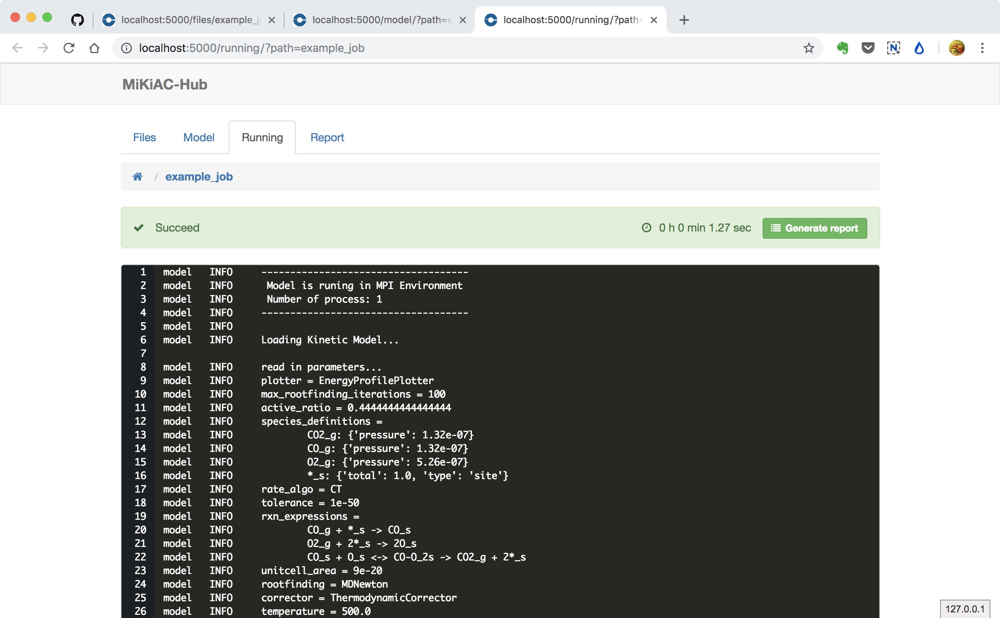

Solve model in MiKiAC-Hub¶
MiKiAC also has a web application named MiKiAC-Hub to help researcher build and solve micro-kinetic model more easily.

Open an existing model in model panel¶
Now you can enter the example_job directory where model setup file
and energy data file have already existed.

Then you can click the green button to open the job panel. MiKiAC-Hub will read all those files and fill the form in model panel automatically.

Run a job¶
After all inputs prepared, you can click the green Run button to call mikiac core to solve current model. Then the running panel will be opened and all solving information will be continously updated and displayed in the code block.
The job is running:

The job is finished:

Generate job report¶
As the log information is not very friendly for users, MiKiAC-Hub provides a report for each completed job. You can click the green Generate report buttong, then a report panel will be opened. All related results such as ODE integration trajectory, steady state coverages, reversibilities and turnover frequencies.